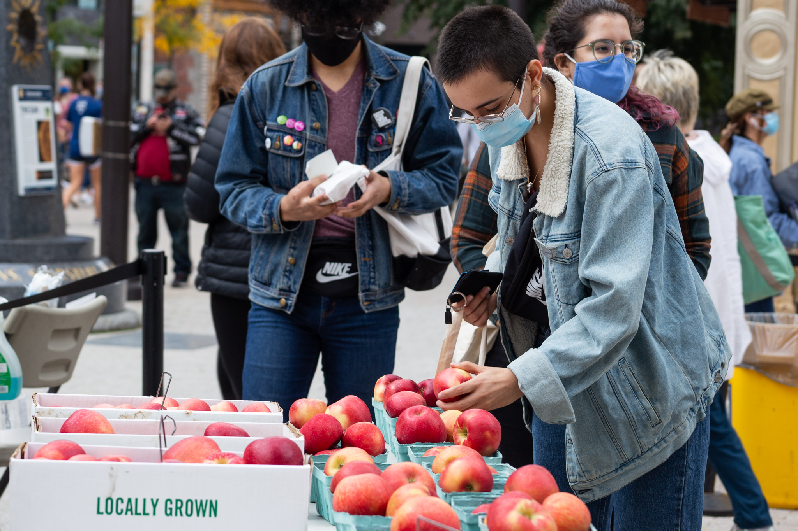
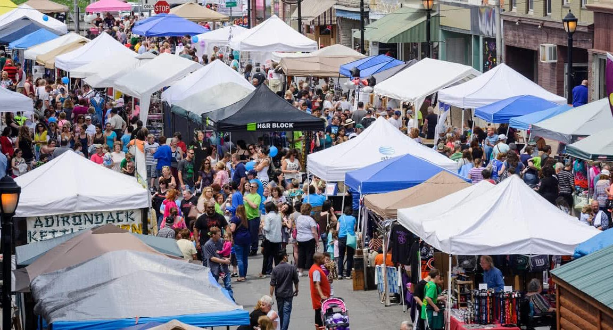

Farmers

Source: Student purchasing fresh apples
AJ Teeter Farm Creamcycle: Pink Apples
Bakers' Acres: Oranges
Ella's Acres: Granny smith apples
Little Grey Bakery: Apple danish
Little Tree Orchards: Yellow apples
MacDonald Farms: Apple jam
Robbies Farm Market: Chocolate
Schweigart's Sugar Shack: Candied apples
Society of Horticulture: Apples
Schoolyard Sugar Bush: More apples
Crafters

Source: Crafter Stands
Cresent Moon Studios: Paintings on wooden blocks
CM Goodenbury Photography: Quick family portrait
Bags that Bite: Crocheted bags
Blue Toucan Studios: Tapastry selling
Bon Fire Craft: License plates
Elizabeth Lassing Jewelry: Hand-crafted jewelry